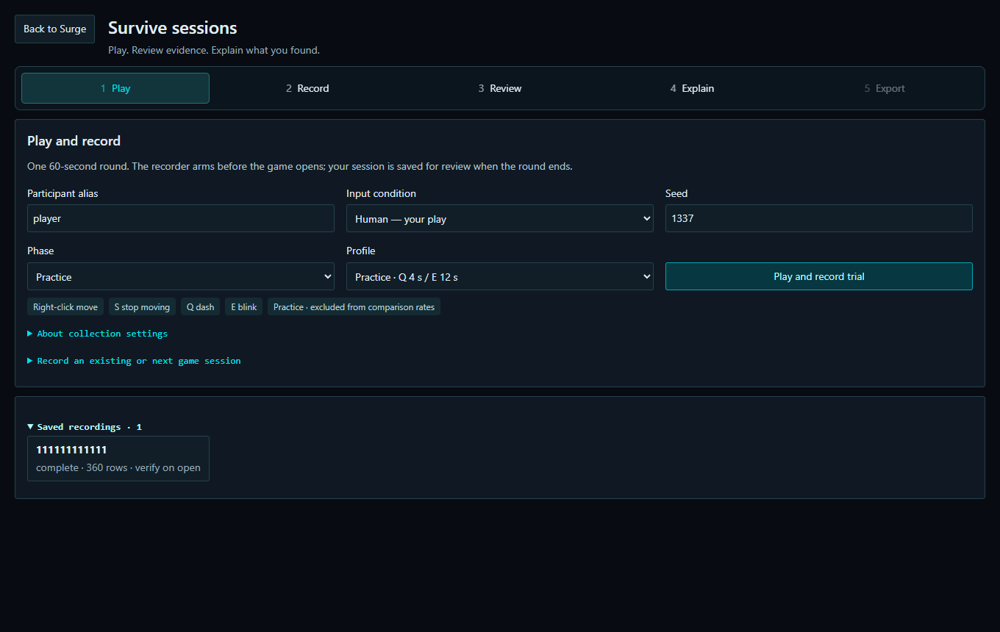

Surge
0.4.4 · 2 November 2026Record gameplay. Inspect a finding. Explain the evidence.
Surge is a student project for exploring gameplay telemetry and anti-cheat investigation. Its companion game, Survive, produces controlled movement data. The desktop app connects movement checks to replays and reports.
Extract the full Windows ZIP and open Surge.exe. No Unreal, Python or Node installation is needed. The build is unsigned.
See the workflow
Five captured screens from the app. This tour is not a live game or gameplay video.

Set up a round
Choose a movement profile and seed. Survive provides right-click movement, dashes, blinks and mixed attack patterns.
Tests and limits
Gameplay, recording, analysis, report export and reopening passed on one fresh Windows 11 VM on 1 November. The current Windows ZIP passed the same workflow on the development host on 2 November. Application executables and game assets are unchanged; this package has not received a new clean-VM test.
This is a controlled research project. It does not inspect League of Legends, interact with Vanguard or establish real-cheat detection accuracy. Human acceptance and false-positive rates remain unmeasured.